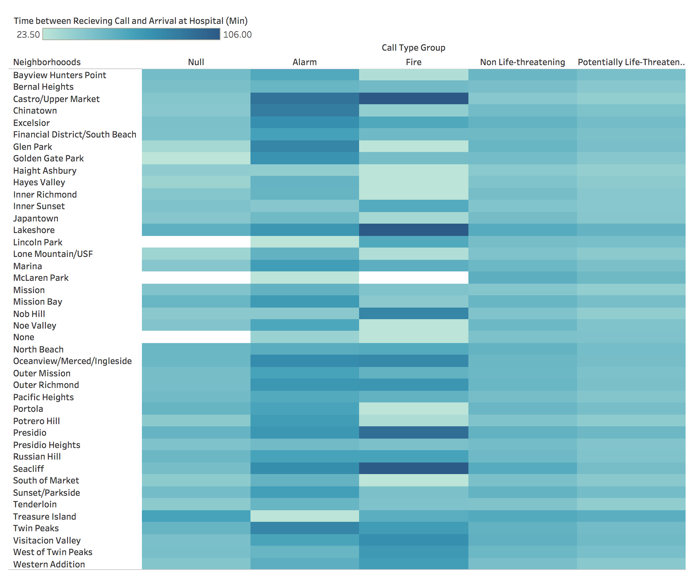
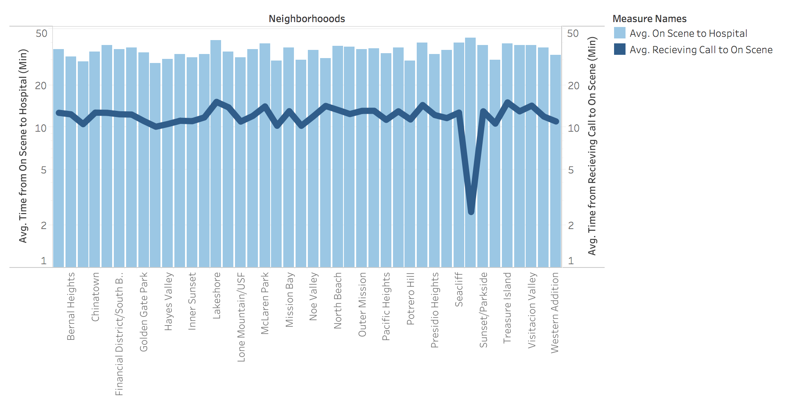

Hospital Access across Neighborhoods
These visualizations seek to view response times across different neighborhoods in SF, specifically looking at hospital transit times, to see if any patterns emerge.
Data Wrangling
To create these visualizations, I downloaded a subset of the original dataset, focusing on 2018-2020 and the Medic and Private Unit Types to focus specifically on hospital related response times. Once in Tableau, this subset was further filtered to only include the data from 2019, which was aggregated and depicted as averages for the year.
I created calculated values to find the difference in time between:
- Recieved DtTm and Hospital DtTm
- Recieved DtTm and On Scene DtTm
- On Scene DtTm and Hospital DtTm
Due to errors in the dataset, there were negative response times calculated, which were filtered out
Planned Interactivity
Both charts will be linked, so hovering over a neighborhood on one chart will highlight the same neighborhood on the other.
The bar chart will have brushing to focus on one specific neighborhood at a time, and will also ideally include a tooltip showing the specific time difference.
Relevance to Theme
Our theme is to analyze the effectiveness of the SF Emergency Response system for the SF community as a whole, and hospital access is crucial to ensuring the safety and health of the overall population. These visualizations will help to look at hospital access across neighborhoods to see if all communities are being given the same chance at immediate medical care.
Prototypes
Response Time Averages by Neighborhood and Call Type in 2019

Chaitrika Budamagunta
Fire Department Calls for Service
Source: https://data.sfgov.org/Public-Safety/Fire-Department-Calls-for-Service/nuek-vuh3
Response Time Averages by Neighborhood in 2019

Chaitrika Budamagunta
Fire Department Calls for Service
Source: https://data.sfgov.org/Public-Safety/Fire-Department-Calls-for-Service/nuek-vuh3